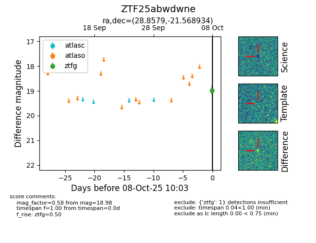

FINK: ZTF25abwdwne
Lasair: ZTF25abwdwne
ALeRCE: ZTF25abwdwne
ZTF25abwdwne (ztf,fink)
equatorial (ra, dec) = (28.8579,-21.56893)
galactic (l, b) = (195.5056,-74.41659)

last ztfg=18.98
1 ztfg detections